1앱 설치(홈 화면에 추가)
이 앱은 앱스토어 없이 인터넷 주소로 열어요. 한 번 홈 화면에 추가하면 일반 앱처럼 아이콘으로 열 수 있어요.
- 아이폰: 사파리에서 daegeon1208-ui.github.io/safety-check/pins/ 를 열고, 아래 공유 버튼(□↑) → 홈 화면에 추가.
- 안드로이드: 크롬에서 같은 주소를 열고, 오른쪽 위 ⋮ → 홈 화면에 추가(또는 앱 설치).
2도면 불러오기
처음 열면 도면 목록이 비어 있어요.
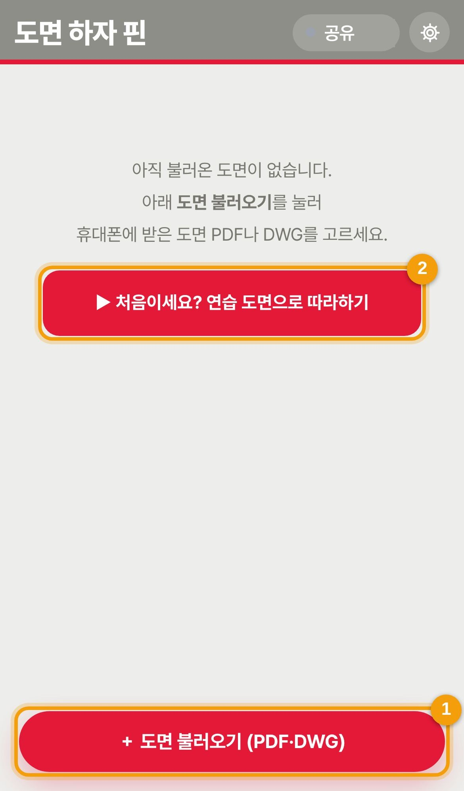
- ＋ 도면 불러오기를 눌러 카톡·파일 앱에 받은 PDF나 캐드 DWG 파일을 고르세요. DWG는 휴대폰 안에서 PDF로 바꿔서 넣어요.
- 처음이라면 연습 도면으로 따라하기를 눌러 보세요. 버튼을 직접 눌러 가며 배울 수 있어요(11번 참고).
불러온 도면은 목록에 쌓이고, 이름 앞에 PDF / DWG 표시가 붙어요. 목록의 ⋯ 에서 이름 바꾸기, 쪽 편집, 복사, 공유, 삭제를 할 수 있어요.
3도면 화면 살펴보기
도면을 누르면 열려요. 두 손가락으로 벌리면 확대, 한 손가락으로 끌면 이동이에요.
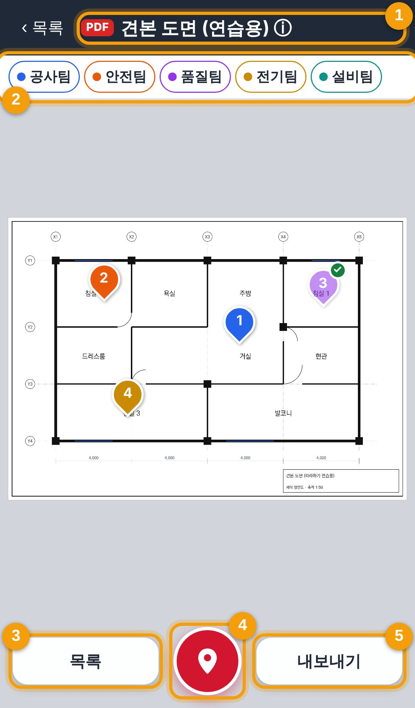
- 도면 제목(ⓘ): 누르면 도면 정보(올린 사람, 팀별 핀 수, 최근 변경)가 나와요.
- 팀 버튼: 보고 싶은 팀의 핀만 골라 볼 수 있어요(7번 참고).
- 목록: 찍은 핀을 한눈에 봐요(8번 참고).
- 핀 버튼: 핀을 찍고 고정하는 가운데 빨간 버튼이에요.
- 내보내기: 사진대지 PDF나 부분 캡처를 만들어요(9번 참고).
핀 색은 팀 색이에요: 공사 안전 품질 전기 설비 · 조치완료 핀은 흐리게 ✓ 표시.
4핀 찍기
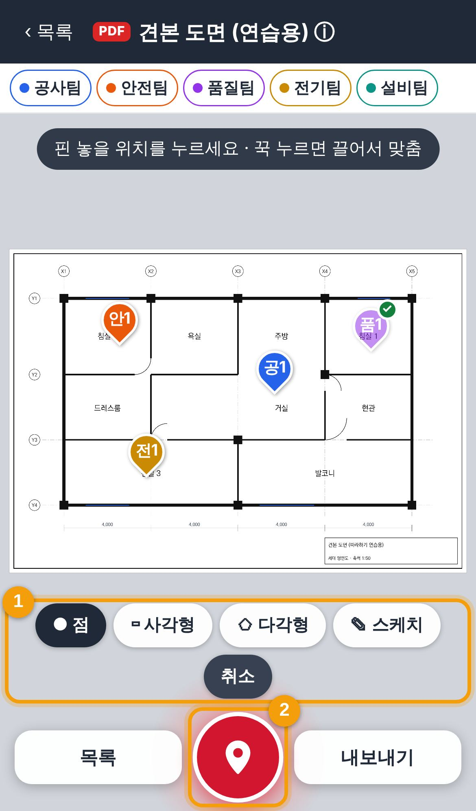
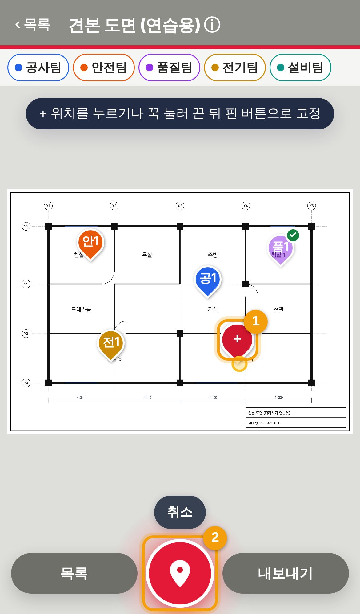
- 가운데 핀 버튼을 누르면 핀 찍기가 시작돼요. 아래에 핀 모양(점·사각형·다각형·스케치)이 나와요. 보통은 점이면 돼요.
- 도면에서 하자 위치를 한 번 누르면 빨간 ＋ 임시 핀이 놓여요. 다른 곳을 누르면 위치가 바뀌고, 꾹 누르면 끌어서 맞출 수 있어요.
- 핀 버튼을 한 번 더 누르면 그 자리에 핀이 고정되고 핀 창이 열려요. 핀 이름은 팀 글자 + 팀 안 번호예요(공1, 안1 …). 팀을 바꾸면 그 팀의 번호로 바뀌어요. 그만두려면 취소.
5핀 내용·사진 넣기
핀이 고정되면 위에는 도면, 아래에는 핀 창이 반씩 보여요. 손잡이를 위로 올리면 크게, 아래로 내리면 닫혀요. 적는 즉시 저장돼요.
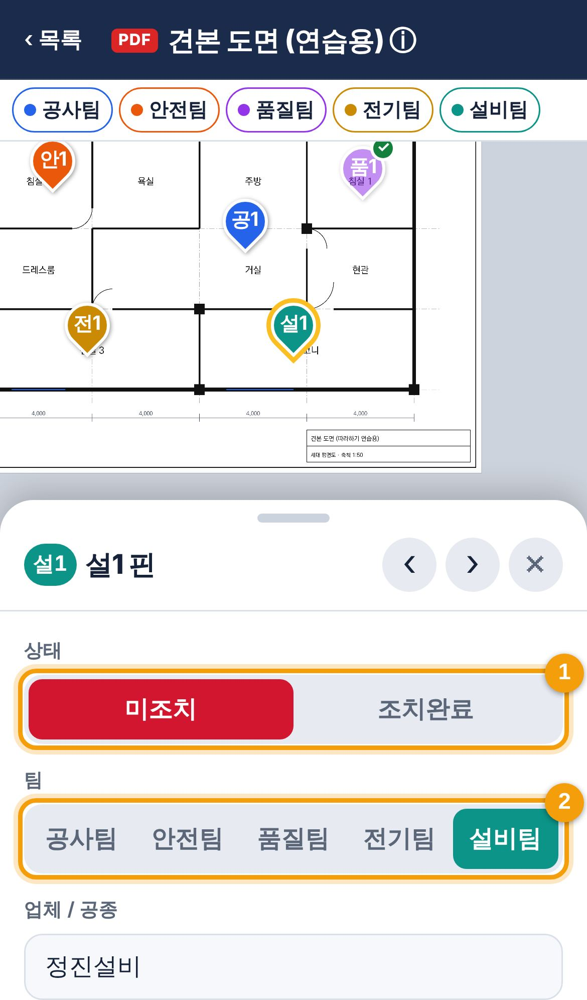
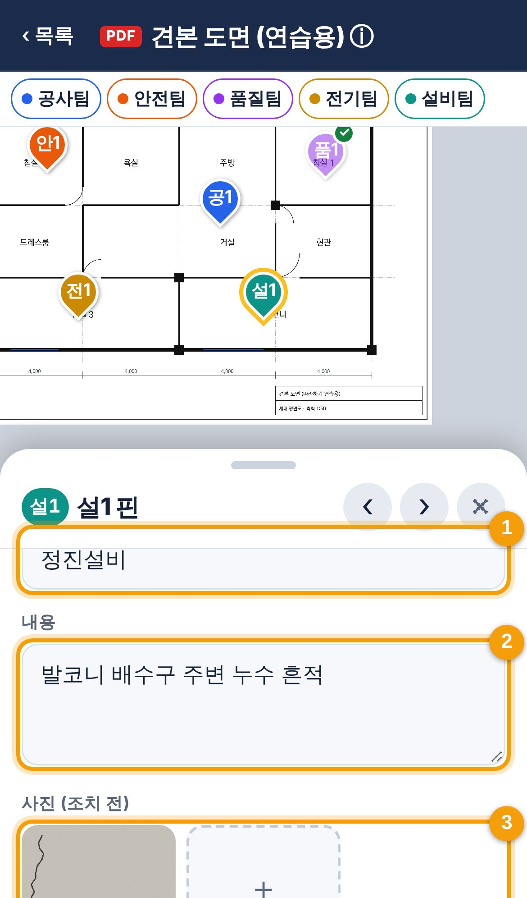
핀 창 위쪽
- 상태: 처음엔 미조치예요. 조치가 끝나면 조치완료를 눌러요(6번 참고).
- 팀: 담당 팀을 고르면 핀 색이 팀 색으로 바뀌어요.
핀 창 아래쪽
- 업체 / 공종: 예) 동우건설 골조. 한 번 쓴 업체는 다음에 골라 쓸 수 있어요.
- 내용: 하자·이슈 내용을 적어요.
- 사진(조치 전): ＋를 눌러 사진을 찍거나 앨범에서 골라요. 사진을 눌러 크게 보면 ↻ 회전으로 방향을 바로잡을 수 있고, 여러 장이면 ☆ 대표 사진을 눌러 사진대지에 들어갈 사진을 골라요.
핀 창 맨 아래에는 위치 옮기기, 삭제, 저장하고 닫기가 있어요. 이미 찍은 핀은 꾹 눌러도 움직이지 않으니, 옮길 때는 위치 옮기기를 쓰세요.
6조치완료 처리
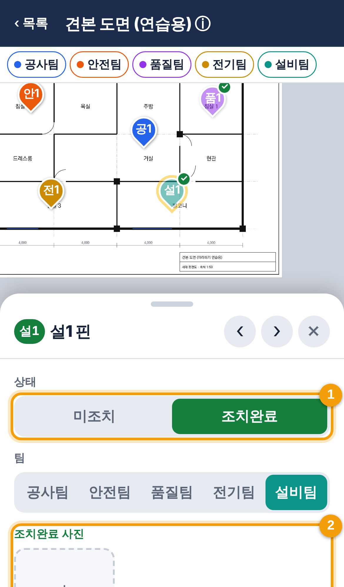
- 조치가 끝나면 핀을 눌러 열고 조치완료를 눌러요. 누른 사람과 시각이 기록돼요.
- 조치완료 사진 칸이 생겨요. 조치 후 사진을 넣으면 사진대지에 조치 전·후가 나란히 들어가요.
다른 사람이 만든 핀도 조치완료와 조치 후 사진은 누구나 넣을 수 있어요. 내용 수정·삭제·이동은 만든 사람과 관리자만 할 수 있어요.
7팀별로 보기
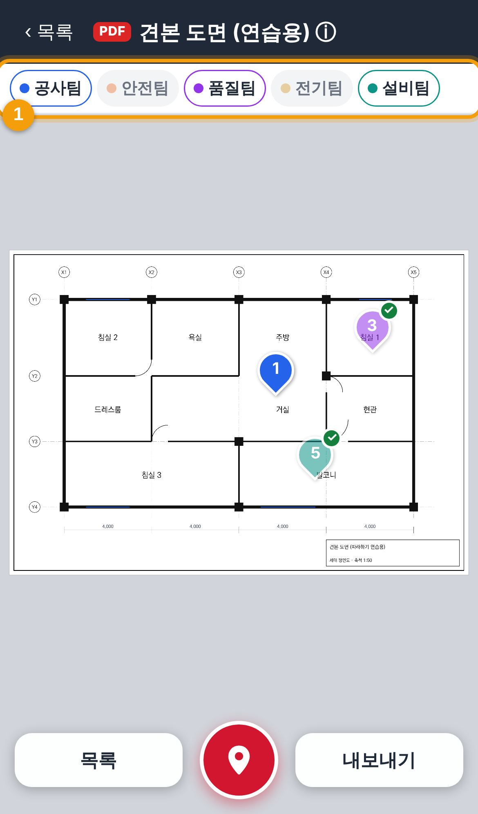
- 도면 위 팀 버튼을 누를 때마다 그 팀 핀이 보였다 숨었다 해요. 흐린 버튼은 숨긴 팀이에요. 여러 팀을 함께 볼 수 있어요.
8핀 목록
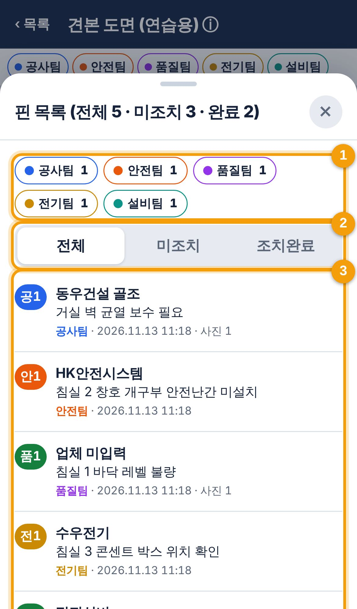
- 팀으로 거르기.
- 전체 · 미조치 · 조치완료로 거르기.
- 핀을 누르면 도면에서 그 위치로 바로 이동해요.
9내보내기(사진대지 PDF)
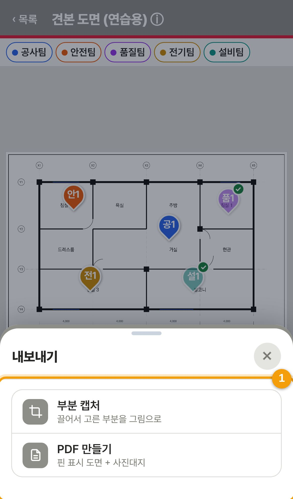
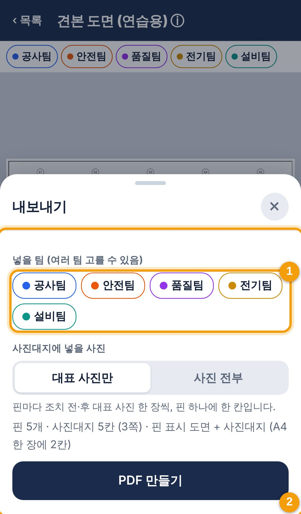
내보내기를 누른 모습
- 부분 캡처: 도면에서 영역을 끌어 그리면 그 부분만 그림으로 만들어요. PDF 만들기: 핀 표시 도면과 사진대지를 PDF 한 파일로 만들어요.
PDF 만들기를 고른 모습
- 넣을 팀을 골라요(여러 팀 가능).
- PDF 만들기를 누르면 파일 이름을 바꾸고 카톡 등으로 바로 보내기하거나 저장할 수 있어요.
만들어지는 PDF는 이렇게 생겼어요. 첫 쪽은 핀이 표시된 도면, 그다음부터 사진대지(A4 한 쪽에 핀 2개: 조치 전·후 대표 사진, 내용, 위치도)예요.
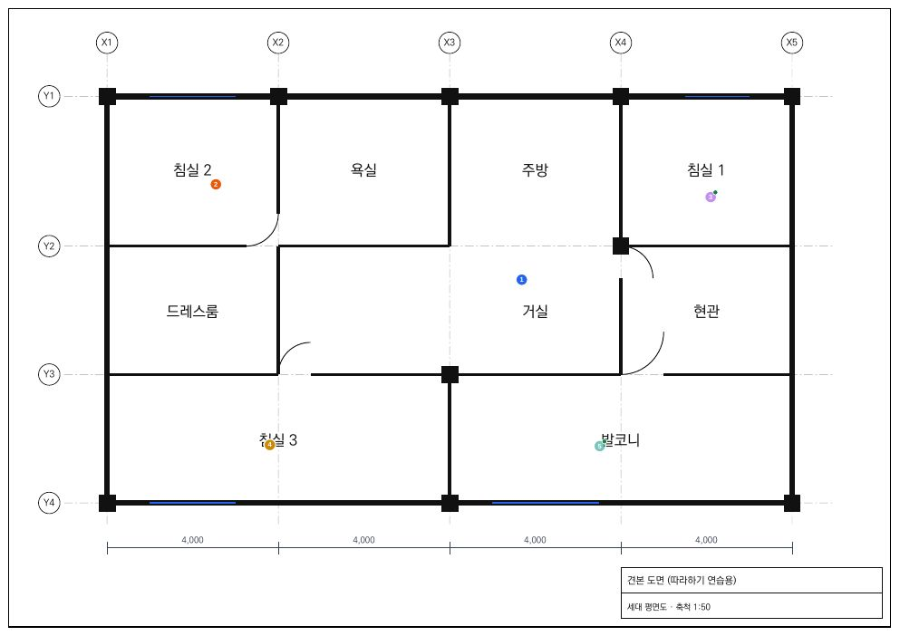
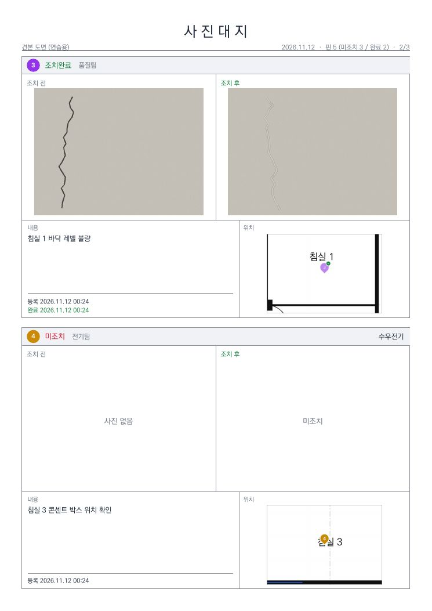
10여러 사람과 함께 쓰기(구글 공유)
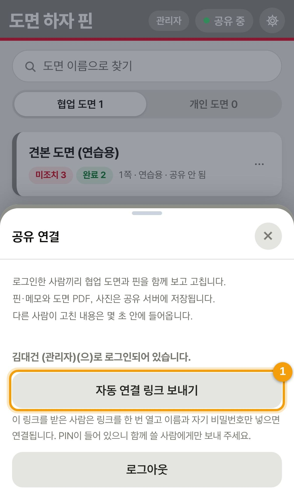
- 관리자에게 받은 웹 앱 URL과 팀 PIN을 넣고, 내 이름과 비밀번호(처음 넣으면 등록)를 적어 연결해요. 같은 설정을 한 사람끼리 도면과 핀이 함께 보이고, 고친 내용은 몇 초 안에 서로 들어가요.
11따라하기로 연습하기
앱 안에서 견본 도면을 열고, 노란 테두리가 가리키는 버튼을 직접 눌러 가며 배우는 연습이에요. 약 3분이면 끝나요. 연습 도면은 구글 공유로 올라가지 않고, 끝나면 지울 수 있어요.
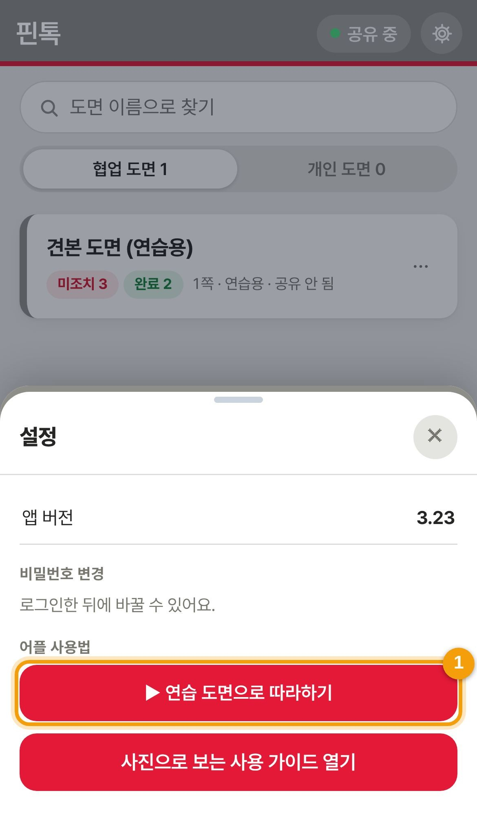
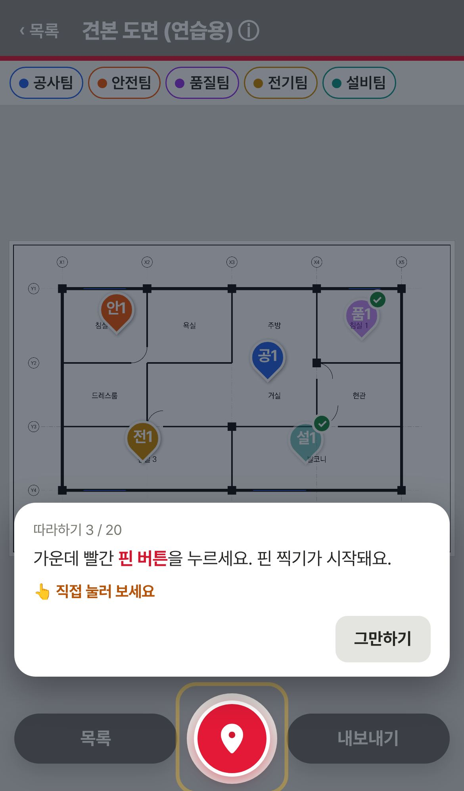
- 목록 화면 오른쪽 위 사용법 → ▶ 연습 도면으로 따라하기. (도면이 하나도 없을 때는 첫 화면에도 버튼이 있어요.)